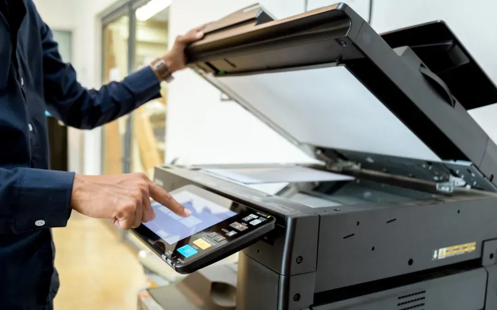

Office & business
How to Secure Your Office Printer and Protect Sensitive Documents
Secure your office printer with practical steps for network access, firmware, user permissions, confidential print jobs and safe disposal.
Introduction: Printers Are Part of Your IT Security
Whilst Office printers can be seen as a simple device some printers do have a lot of complexity with processors, memory, operating systems and networking. Depending on the type of printer you have they may have memory for recently printed documents, contacts, cloud access and your scanned documents. If poorly secured a printer can put sensitive information at risk and create a breach in your office network.
There is no need to have complex security measures in place for your printers in your small business. Simple steps can be put in place to help secure your printers. Updating passwords, firmware, limiting network access, user access and document security can be added to your IT and equipment processes.
1. Change Default Admin Password
Some printers have a web interface or menu. If you have not changed the default admin password then anyone knowing the default login for your printer could change settings. When setting up your printer ensure you change the default password. Ensure you have a unique and strong password. Save this password into your organisation password manager.
Ensure you don’t have a personal password and don’t label the password on the printer. Only give access to people who require access to the password. If your printer allows multiple users ensure they have their own account.
2. Secure Network
Ensure your printers are on the right network and if possible place them within its own network segment/VLAN. This will help reduce the impact of any compromise. Ensure your printer has limited access to only the necessary computers and servers. This depends on your network setup.
Don’t place your business printer on an open guest network. Ensure your Wi-Fi is up to date with the latest security protocols. Ensure your wireless network has a strong password. Disable any unused features (wireless, remote access). If you are in a managed office please consult your IT administrator.

3. Update Firmware/Software
Printer firmware can contain updates for security, stability and new network standards. Visit the manufacturers official website or management tool for your exact model. Follow the release notes and installation instructions. Ensure you have a stable power source. Don’t interrupt the firmware update unless instructed by the manufacturer.
Ensure you are using official sources to update your drivers on your computer. Remove any old or unsupported drivers.
4. Disable Unused Services/Ports
Printers can have a variety of services available to them which can include remote access, file sharing, discovery, direct printing and cloud. If any are enabled this can be extra work. Look at your settings and disable any not needed.
If your printer doesn’t require remote access outside of the office don’t enable it. Don’t forward any ports to your printer using your office router. If you do require remote access ensure you are using an approved secure method.
5. Limit User Access
If your printer allows individual users ensure you use them. Disable any unnecessary features. Ensure only authorised users have admin access. If any employees are leaving remove their access. Ensure you have looked at your scan locations and contacts to ensure they aren’t accidentally sending documents somewhere.
If you have a small office and no advanced identification features you can still do some basic steps. Ensure your printer is in a controlled area. Limit user access to settings and network. Ensure your staff know how to report any unexpected prompts, unknown settings or suspicious activity.
6. Secure Print
When printing to a shared printer the document will be left in the output tray open for anyone to view. By using secure print, pin printing or user authentication you can configure your printer to not print until the user arrives and authenticates. This can be useful when printing payroll, HR, customer info, contracts and financial documents.
If your printer doesn’t have secure print ask your employees to only print sensitive documents when they are near the printer. Ensure they collect all pages immediately. Place shared printers in a convenient but private area. Never leave any sensitive originals or printing errors.
7. Secure Scans/Digital Locations
Multifunction printers can send scanned documents to an email, shared folder, cloud or document management system. Check your settings and remove any no longer needed. Ensure you are using official business accounts to store company information. Ensure your folders have access control. Ensure your links aren’t giving more access than required.
If possible use encrypted connections to send emails/files. Before scanning any sensitive documents ensure you are sending them to the correct person. Employees shouldn’t scan documents to public/shared locations.
8. Stored Jobs/Internal Memory
Some printers have internal memory to store print jobs, scanned documents, logs and settings. This will depend on the model and settings. Check your manufacturers documentation to see what they are storing, how long they are storing them for and if they have any automatic delete or secure erase options.
If your printer is being moved, reallocated or decommissioned treat the internal memory as business data. Follow the secure wipe/memory clean process. If your printer contains sensitive information consider using an approved support team. Simply switching off or doing a factory reset may not be enough.
9. Secure Device/Output
Ensure your printer is located in an area that isn’t easily accessible to visitors. If it is in a public reception area don’t print sensitive information. Ensure covers are closed during maintenance.
Ensure your employees have a routine for picking up their jobs. They should pick them up quickly, ensuring they have printed all pages and removing any errors. Ensure you have a secure shredder or approved confidential bin for any documents you no longer need. Leaving paper around your printer can cause issues even if your network settings are great.
10. Printer Security Checklist
Ensure your printer has a record. This should include model, serial number, location, network connection, admin owner, firmware version, support status, last reviewed and updated by. If you have a new printer ensure you follow a checklist. This should include changing passwords, network, services, firmware, access and secure disposal.
Periodically check your printer and after any major changes to your network/staff. If your printer has unexpected settings, is sending unexpected emails or acting strangely disconnect from your network if possible. Contact your IT administrator. Ensure you have any logs/error messages.
11. Decommission
If your printer is no longer receiving security updates it can pose an ongoing risk to your business. If it is connected to your business network or dealing with confidential information contact the manufacturer to ensure it is still supported. If it no longer meets your security requirements consider replacing it. Balance this with if it can be fixed, availability and if your business actually needs it.
If you are looking to sell/recycle your printer ensure you wipe your data as per manufacturers recommendations. Remove any saved network information and contacts. Reset your settings. Ensure any removable memory is securely handled. Follow your organisations retention policy and local e-waste requirements.
Conclusion
To secure your office printer you should look at securing your networked device and output. Change default passwords, update firmware, limit network access and disable any unnecessary services. Use secure print for sensitive documents, limit scan locations and secure any stored data. By using a simple checklist and regularly reviewing your printers you will make printer security a standard part of your office IT.
Need a hand with your printer or laptop?
Printerworld sells printers, laptops and genuine supplies, and repairs and services both. Bring in your model number and we will help you get it right.